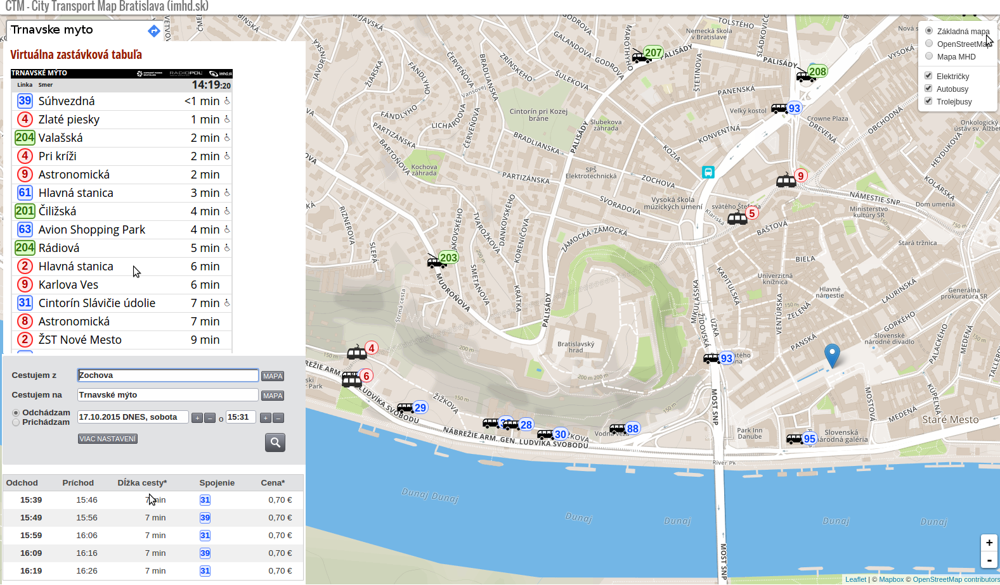

City Transport Map Bratislava
CTM

DanubeHack 2015
Who
Richard Laffers (dev)
- 10+ year experience in HTML, Javascript, PHP
- ... and crazy about Go
- https://github.com/rlaffers
Pavol Bučko (brainstorming)
We both work at MOVYS a.s. http://movys.sk
Why
- Where's my bus?
- Have I missed it?
... but also:
- When will it come REALLY?
- How do I get from A to B?
What's out there
- No live map
- No actual traffic conditions
Live map of city transportation vehicles

What's next
- Traffic layer
- Bus stop layer
- Search (address & bus stops)
- Integrate with Ride planner (imhd.sk)
- Integrate with virtual departure board at imhd.sk
- Push messages with WebSockets (faster updates, less net traffic, and the coolness factor)
- Better arrival times based on traffic and trends
- Mobile app
Join us!
github.com/rlaffers/ctm
rlaffers@gmail.com
/